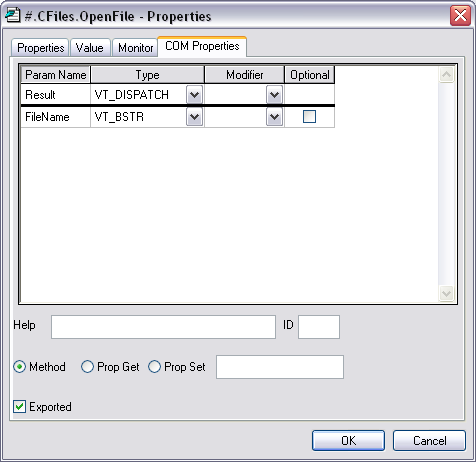
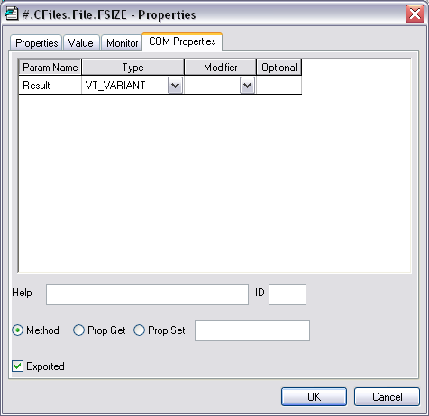
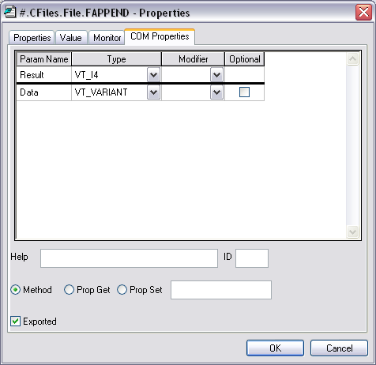
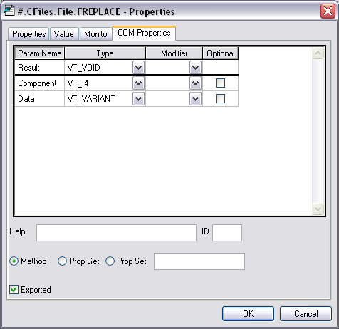

CFILES.DWS contains a single OLEServer namespace called CFiles which implements a basic object-oriented interface to Dyalog APL component files.
This example allows an OLE Client, such as Excel, to read and write APL component files. It is deliberately over-simplified but illustrates how an object hierarchy may be implemented.
Unlike the previous example, the CFILES workspace is supplied as a complete OLEServer with all of the COM properties for its methods already defined. All you have to do is to export it as a COM Server.
The CFiles namespace contains a single function OpenFile and a sub-namespace called File which is also an OLEServer. This namespace contains functions FREAD, FREPLACE, FAPPEND and FSIZE.
To use this Server, an OLE Client requests an instance of the dyalog.CFiles object.
To open a component file, an OLE Client calls OpenFile with the name of the file as its argument. This function opens the file and returns, not a file tie number as you might expect, but an instance of the File namespace which is associated with the file. As far as the client is concerned, this is a subsidiary OLE object of type dyalog.File.
To perform file operations, the client invokes the FREAD, FREPLACE, FAPPEND and FSIZE methods (functions) of the File object.
A more sophisticated example might expose each component as a subsidiary object too.
In order to explore the use of an APL OLE Server using the CFILES workspace as an example, you must register the CFiles object on your system.
)LOAD the CFILES workspace from the samples\ole sub-directory
)LOAD SAMPLES\OLE\CFILES samples\ole\cfiles saved ... )OBS CFiles
Then select Export from the Session File menu and create either an in-process or out-of process OLE Server.
∇ FILE←OpenFile NAME;F;TIE [1] ⍝ Makes a new File object [2] TIE←1+⌈/0,⎕FNUMS [3] NAME ⎕FTIE TIE [4] File.TieNumber←TIE [5] File.Name←NAME [6] FILE←⎕OR'File' ∇
OpenFile takes the name of an existing component file and opens it exclusively using ⎕FTIE.
It returns an instance of the File namespace that is associated with the file through the variable TieNumber. This is global to the File namespace.
OpenFile[4]sets the variable TieNumber in the File namespace to the tie number of the requested file.
OpenFile[5]sets the variable Name in the File namespace to the name of the requested file. This is not actually used.
OpenFile[6]creates an instance of the File namespace using ⎕OR and returns it as the result.
Note that there is a separate instance of File for every file opened by every OLE Client that is connected. Each knows its own TieNumber and Name.
The COM Properties dialog box for OpenFile is shown below. The function is declared to take a single parameter called FileName whose data type is VT_BSTR (a string). The result of the function is of data type VT_DISPATCH. This data type is used to represent an object.

∇ R←FSIZE [1] R←⎕FSIZE TieNumber ∇
FSIZE returns the result of ⎕FSIZE for the file associated with the current instance of the File namespace.
The COM Properties dialog box for FSIZE is shown below. The function is declared to take no parameters. The result of the function is of data type VT_VARIANT. This data type is used to represent an arbitrary APL array.

∇ R←FREAD N [1] R←⎕FREAD TieNumber,N ∇
FREAD returns the value in the specified component read from the file associated with the current instance of the File namespace.
The COM Properties dialog box for FREAD is shown below. The function is declared to take a single parameter called Component whose data type is VT_I4 (an integer). The result of the function is of data type VT_VARIANT. This data type is used to represent an arbitrary APL array.
∇ R←FAPPEND DATA [1] R←DATA ⎕FAPPEND TieNumber ∇
FAPPEND appends a component onto of the file associated with the current instance of the File namespace.
The COM Properties dialog box for FAPPEND is shown below. The function is declared to take a single parameter called Data whose data type is VT_VARIANT. This data type is used to represent an arbitrary APL array. The result of the function is of data type VT_I4 (an integer).

∇ FREPLACE ID;I;DATA [1] I DATA←ID [2] DATA ⎕FREPLACE TieNumber,I ∇
FREPLACE replaces the specified component of the file associated with the current instance of the File namespace.
The COM Properties dialog box for FREPLACE is shown below. The function is declared to take two parameter. The first is called Component and is of data type VT_I4 (integer). The second parameter is called Data and is of data type VT_VARIANT. This data type is used to represent an arbitrary APL array. The result of the function is of data type VT_VOID, which means that the function does not return a result.

Start Excel and load the spreadsheet CFiles.xls from the Dyalog APL sub-directory samples\ole.
Please note that to simplify the Excel code, only components containing matrices (such as those contained in samples\ole\test.dcf) are handled. Components containing scalars, vectors, higher-rank arrays and complex nested arrays are not supported.
To open a file, type the name of the file and click the Open button. This runs the FOpen procedure. A test file named test.dcf is provided in the samples\ole sub-directory.
To read a component, enter the component number and click Read. This runs the FRead procedure.
To replace a component, first enter the component number. Then type some data elsewhere on the spreadsheet and select it. Now click Replace. This runs the FReplace procedure.
To append a component, enter some data elsewhere on the spreadsheet and select it. Now click Append. This runs the FAppend procedure.
Public CF As Object
Public File As Object
Dim Data As Variant
Sub FOpen()
Set CF = CreateObject("dyalog.CFILES")
f = Cells(1, 2).Value
Set File = CF.OpenFile(f)
Call FSize
End SubIn the declaration section, the first statement declares a global variable CF to be of data type Object. This variable will be connected to the dyalog.CFiles OLE Server object. The second statement declares a global variable File to be of data type Object. This variable will be connected to the dyalog.File OLE Server object. The third statement declares a global variable Data to be of data type Variant. This is equivalent to a nested array. This variable will be used for the component data.
The statement:
Set CF = CreateObject("dyalog.CFILES")causes OLE to start Dyalog APL and obtain an instance of the dyalog.CFiles OLE Server object which is then associated with the variable CF. Because this variable is global, the OLE Server remains in memory and available for use.
The statement
f = Cells(1, 2).Value
gets the name of the file to be opened and puts it into the (local) variable f.
Finally, the statement:
Set File = CF.OpenFile(f)
calls the OpenFile function and stores the result (which is an object) in the global variable File.
Sub FRead() c = Cells(4, 2).Value Data = File.FREAD(c) For r = 0 To UBound(Data, 1) For c = 0 To UBound(Data, 2) Cells(r + 6, c + 2).Value = Data(r, c) Next c Next r End Sub
The statement:
c = Cells(4, 2).Value
gets the number of the component to be read and stores it in the (local) variable c.
The statement:
Data = File.FREAD(c)
calls the FREAD function in the instance of the File namespace that is connected to the (global) Excel variable File. The result is stored in the variable Data.
The remaining statements copy the data from Data into the spreadsheet.
Sub FReplace() c = Cells(4, 2).Value Data = Selection.Value Call File.FReplace(c, Data) Call Fsize() End Sub
The statement:
c = Cells(4, 2).Value
gets the number of the component to be replaced and stores it in the (local) variable c.
The statement:
Data = Selection.Value
gets the contents of the selected range of cells and stores it in the variable Data. This will be a 2-dimensional matrix.
The statement:
Call File.FReplace(c, Data)
calls the FREPLACE function in the instance of the File namespace that is connected to the (global) Excel variable File.
Sub FAppend() Dim Rslt As Variant Data = Selection.Value Rslt = File.FAppend(Data) Call Fsize() End Sub
The statement:
Data = Selection.Value
gets the contents of the selected range of cells and stores it in the variable Data. This will be a 2-dimensional matrix.
The statement:
Rslt = File.FAppend(Data)
calls the FAPPEND function in the instance of the File namespace that is connected to the (global) Excel variable File. The result of this function is ignored.